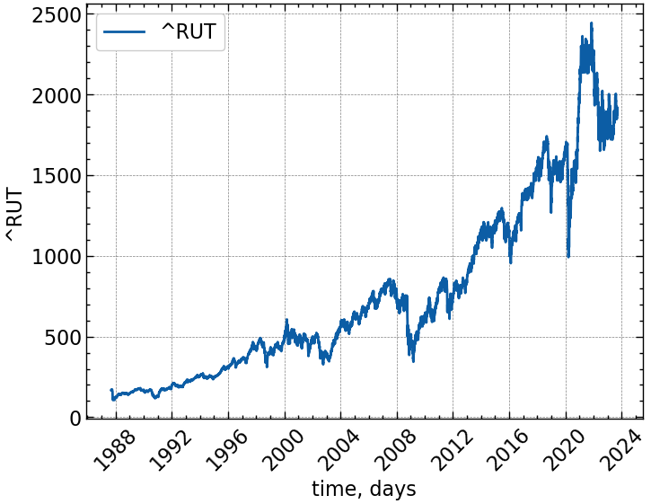
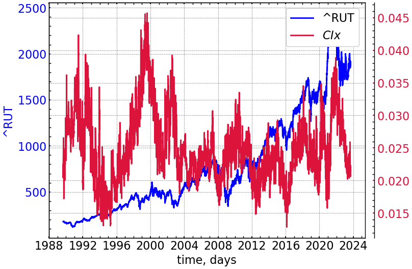
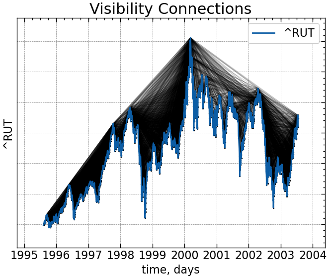
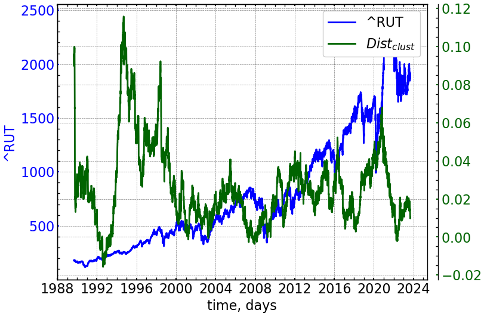
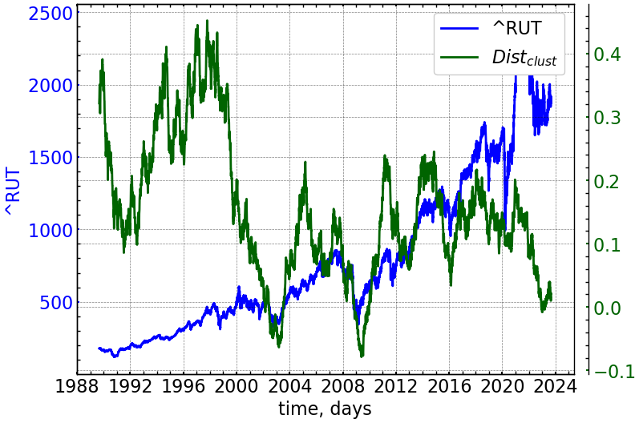

import numpy as np
from sklearn import preprocessing
import matplotlib.pyplot as plt
import matplotlib.dates as mdates
import scienceplots
import pandas as pd
import yfinance as yf
import networkx as nx
import neurokit2 as nk
from scipy.stats import entropy
from ordpy import ordinal_distribution
from tqdm import tqdm
from scipy.integrate import quad
from scipy.stats import gaussian_kde
from scipy.spatial import distance
from KDEpy import FFTKDE
from ts2vg import NaturalVG, HorizontalVG
%matplotlib inline9 Лабораторна робота № 11
Тема. Аналіз незворотності часового ряду.
Мета. Навчитись розраховувати значення індексів незворотності часу для складних сигналів та досліджувати їх динаміку у випадку незворотних змін, побудови передвісників критичних і кризових явищ.
9.1 Теоретичні відомості
Незворотність часу є фундаментальною властивістю нерівноважних дисипативних систем, і її втрата може свідчити про розвиток деструктивних процесів.
З огляду на статистичні властивості досліджуваного сигналу, його еволюцію можна було б назвати незворотною, якби була відсутня інваріантність, тобто був би отриманий той же сигнал, якби ми виміряли його в протилежному напрямку. Функція \(f\) може бути застосована для знаходження характеристик, які відрізняються прямою і зворотною версіями, тобто часові ряди незворотні, якщо \(f(X^d) \neq f(X^r)\). Основна ідея цього визначення полягає в тому, що немає ніяких обмежень на \(f(\cdot )\).
Передбачається, що стаціонарний процес \(X\) називається статистично зворотним у часі, якщо розподіл ймовірностей прямої та зворотної систем приблизно однаковий. Незворотність часових рядів вказує на наявність нелінійних залежностей (пам’яті) в динаміці системи, далекій від рівноваги, включаючи негауссові випадкові процеси та дисипативний хаос.
9.1.1 Незворотність на основі діаграм Пуанкаре
Діаграма Пуанкаре для часового ряду являє собою графік, на осі \(x\) якого розташовані значення для поточного часу \(t\), а на осі \(y\) — його наступні значення в часі \(t+\tau\). Усі наступні значення, які рівні один одному (\(x(t) = x(t+\tau)\)), розташовані на лінії ідентичності (line of identity, LI). Інтервали, що представляють зростаючу тендецію, відмічені вище LI (\(x(t)<x(t+\tau)\)), тоді як спадна тенденція характеризуватиметься скупченням точок нижче LI (\(x(t)>x(t+\tau)\)). Оцінюючи асиметрію точок на діаграмі, ми можемо вивести різні кількісні показники незворотності (асиметрії) досліджуваних систем.
Індекс Гузіка (GIx)
GIx можна визначити як відношення відстаней точок вище LI до відстаней усіх точок на діаграмі:
\[ GIx = \frac{\sum_{i=1}^{a} \left( D_{i}^{+} \right)^{2}}{\sum_{i=1}^{m} \left( D_{i} \right)^{2} }, \]
де \(a = C(P_{i}^{+})\) позначає кількість точок над LI; \(m = C(P_{i}^{+}) + C(P_{i}^{-})\) позначає кількість точок на графіку Пуанкаре; \(D_{i}^{+}\) це відстань від точки над LI до самої LI. Відстань точки до LI можна визначити як
\[ D_{i} = \frac{|x(i+\tau) - x(i)|}{\sqrt{2}}. \]
Індекс Порти
Індекс Порти (PIx) визначається як кількість точок нижче LI, поділена на загальну кількість точок на графіку Пуанкаре, за винятком тих, що знаходяться на LI:
\[ PIx = \frac{b}{m}, \]
де \(b = C(P_{i}^{-})\) кількість точок нижче LI.
Індекс Кошти
Індекс Кошти бере до уваги кількість інкриментів (\(x(i+1)-x(i) > 0\)) та декриментів (\(x(i+1)-x(i) < 0\)). Вони представляються симетричними, якщо рівні один одному. Даний індекс розраховується для двовимірної мультимасштабної площини (\(x(i), x(i+L)\)), де новий крос-гранульований ряд \(y_{\tau}(i) = x(i+L)-x(i)\) для \(1 \leq i \leq N-\tau\) відображає асиметрію інкриментів та декриментів ряду, і індекс незворотності для діапазону масштабів \(\tau\) визначається наступним виразом:
\[ CIx_{\tau} = \frac{\sum_{y_{\tau}<0} H[y_{\tau}] - \sum_{y_{\tau}>0} H[y_{\tau}]}{N-\tau}. \]
Узагальнений індекс Кошти для діапазону мастабів \(\tau\) може бути визначений як
\[ CIx = \frac{1}{L} \sum_{\tau=1}^{L} |CIx_{\tau}|, \]
де \(L\) — це максимальний масштаб.
Індекс Ейлера
Опираючись на асиметрію розподілу точок нижче та вище LI, Ейлер запропонував індекс асиметрії:
\[ EIx = \frac{\sum_{i=1}^{N-1} \left[ x(i)-x(i+\tau) \right]^{3}}{\left[ \sum_{i=1}^{N-1} \left[ x(i)-x(i+\tau) \right]^{2} \right]^{\frac{3}{2}}}. \]
Значне відхилення \(EIx\) від 0 вказує на асиметрію системи. Якщо \(EIx>0\), розподіл точок на діаграмі Пуанкаре значно зміщений у сторону вище LI. Зворотня ситуація спостерігається для \(EIx<0\). Для \(EIx \approx 0\) досліджувані сегменти представляються зворотніми в часі.
Індекс площі
Індекс площі (AIx) визначається як сукупна площа секторів, що сформовані точками над LI поділена на сукупну площу секторів, що відповідають усім точкам на графіку Пуанкаре (крім тих, що розташовані точно на LI). Площа сектора, що відповідає певній точці \(P_{i}\) на графіку Пуанкаре, обчислюється як
\[ S_{i} = \frac{1}{2} \times R\theta_{i} \times r^{2}, \]
де \(r\) — це радіус сектора; \(R\theta_{i} = \theta_{LI} - \theta_{i}\); \(\theta_{LI}\) — це фазовий кут, і \(\theta_{i} = \arctan{\left[ \frac{x(i+\tau)}{x(i)} \right]}\), що визначає фазовий кут \(i\)-ої точки. Далі, \(AIx\) визначається за наступною формулою:
\[ AIx = \frac{\sum_{i=1}^{a}|S_{i}|}{\sum_{i=1}^{m}|S_{i}|}. \]
Індекс кута нахилу
На додачу до представлених вище мір, було запропоновано розраховувати незворотність сигналу з відношення кутів нахилу точок над LI до нахилу всіх точок на діаграмі:
\[ SIx = \frac{\sum_{i=1}^{a}|R\theta_{i}|}{\sum_{i=1}^{m}|R\theta_{i}|}. \]
9.1.2 Методи складних мереж
Графи видимості (VG) базуються на простому відображенні часових рядів у мережеву область, використовуючи локальну опуклість скалярно-позначених часових рядів, де кожне спостереження є вершиною в складній мережі. Дві вершини і пов’язані ребром, якщо для всіх вершин застосовується наступна умова:
\[ x_{k} < x_{j} + \left( x_{i} - x_{j} \right) \frac{t_{j}-t_{k}}{t_{j}-t_{i}}. \]
Матрицю суміжності (\(A_{ij}\)) представленого ненаправленого та незваженого VG можна представити як:
\[ A_{ij}^{VG} = A_{ji}^{VG} = \prod_{k=i+1}^{j-1} H \left( x_{k} < x_{j} + \left( x_{i} - x_{j} \right) \frac{t_{j}-t_{k}}{t_{j}-t_{i}} \right), \]
де \(H( \cdot )\) — це функція Гевісайда.
Граф горизонтальної видимості (HVG) є спрощеною версією цього алгоритму. Для досліджуваного часового ряду набори вершин VG і HVG однакові, тоді як набір ребер HVG відображає взаємну горизонтальну видимість двох спостережень \(x_{i}\) та \(x_{j}\). Тобто можна побудувати ребро \((i,j)\), якщо \(x_{k} < \min(x_{i}, x_{j})\) для всіх \(k\) при \(t_{i} < t_{k} < t_{j}\) так що
\[ A_{ij}^{VG} = A_{ji}^{VG} = \prod_{k=i+1}^{j-1} H \left( x_{i} - x_{k} \right) H \left( x_{j} - x_{k} \right). \]
VG і HVG фіксують по суті одні й ті ж властивості досліджуваної системи, оскільки HVG є підграфом VG з тим же набором вершин, але володіє тільки підмножиною ребер VG. Зверніть увагу, що VG інваріантний щодо суперпозиції лінійних трендів, тоді як HVG — ні.
Оскільки визначення VGs та HVGs чітко враховує часовий порядок спостережень, напрямок часу нерозривно пов’язаний з отриманою структурою мережі. Щоб врахувати цей факт, ми визначаємо набір нових статистичних мережевих показників на основі двох простих характеристик вершин:
- Оскільки кількість ребер інцидентних вершині \(i\) можна визначити як \(k_{i}^{r} = \sum_{j} A_{ij}\), для (H)VG ми можемо переписати дану кількісну характеристику для вершини в час \(t_{i}\) відносно її минулих та майбутніх вершин:
\[ k_{i}^{r} = \sum_{j<i} A_{ij} \quad \mathrm{and} \quad k_{i}^{a} \sum_{j>i} A_{ij}, \]
де \(k_{i} = k_{i}^{r} + k_{i}^{a}\), і \(k_{i}^{r}\) та \(k_{i}^{a}\) сприймаються як вхідні (минулі) та вихідні (майбутні) вершини.
- Локальний коефіцієнт кластеризації \(C_{i} = \left( \begin{matrix} k_{i}\\ 2 \end{matrix} \right)^{-1} \sum_{j,k} A_{ij}A_{jk}A_{ki}\) інша властивість старшного порядку структурного сусідства вершини \(i\). Для дослідження незворотності, ми можемо переписати дані характеристики наступним чином:
\[ C_{i}^{r} = \left( \begin{matrix} k_{i}^{r}\\ 2 \end{matrix} \right)^{-1} \sum_{j<i,k<i} A_{ij}A_{jk}A_{ki} \quad \textrm{and} \quad C_{i}^{a} = \left( \begin{matrix} k_{i}^{a}\\ 2 \end{matrix} \right)^{-1} \sum_{j>i,k>i} A_{ij}A_{jk}A_{ki}. \]
Якщо уявити нашу систему зворотною в часі, ми припускаємо, що розподілу ймовірностей прямих і зворотних за часом характеристик повинні бути однаковими. Для незворотних процесів ми очікуємо виявити статистичну нееквівалентність. Ця нееквівалентність буде визначатися через дивергенцію Кульбака-Лейблера:
\[ D_{KL}(p||q) = \sum_{i=1}^{N} p(x_{i}) \cdot \log{\left[ \frac{p(x_{i})}{q(x_{i})} \right]}, \]
де \(p(\cdot)\) відповідатиме розподілу вхідних характеристикам, а \(q(\cdot)\) відповідатиме зворотнім.
9.1.3 Незворотність на основі пермутаційних шаблонів
Ідея аналізу пермутаційних шаблонів (PP — permutation patterns) спочатку була запропонована Бандтом і Помпе, щоб надати дослідникам простий та ефективний інструмент для характеристики складності динаміки реальних систем. Він уникає порогу амплітуди і замість цього має справу з порядковими шаблонами перестановок. Їх частоти дозволяють відрізнити детерміновані процеси від абсолютно випадкових. Розрахунки PP припускають, що часовий ряд розбивається на пересічні підвектори довжини \(d_{E}\):
\[ \vec{X}(i) = \left\{ x(i), x(i+\tau), ... , x(i+[d_{E}-1]\tau) \right\}, \]
де часова затримка \(\tau\) відповідає часу розділення між елементами.
Після цього кожен вектор представляється у вигляді порядкового шаблону \(\pi = \{ r_0, r_1, ... , r_{d_{E}-1} \}\), що має задовільняти наступній умові:
\[ x(i+r_0) \leq x(i+r_1) \leq ... \leq x(i+r_{d_{E}-1}). \]
Цікава для нас міра незворотності часу на основі PP може бути отримана шляхом врахування їх відносної частоти як для початкового, так і для оберненого часового ряду. Відповідно, якщо обидва типи мають приблизно однакові розподіли ймовірностей своїх патернів, часові ряди представляються зворотними, а для іншого випадку робиться протилежний висновок.
Різницю між розподілами прямих часових рядів (\(P^{d}\)) та зворотних (\(P^{r}\)) можна оцінити за допомогою дивергенції Кульбака-Лейблера.
9.2 Хід роботи
9.2.1 Підключення необхідних бібліотек
9.2.2 Встановлення параметрів для побудови графіків
plt.style.use(['science', 'notebook', 'grid']) # стиль, що використовуватиметься
# для виведення рисунків
params = {
'figure.figsize': (8, 6), # встановлюємо ширину та висоту рисунків за замовчуванням
'font.size': 22, # розмір фонтів рисунку
'lines.linewidth': 2, # товщина ліній
'axes.titlesize': 'small', # розмір титулки над рисунком
"font.family": "sans-serif", # сімейство стилів підписів
"font.serif": ["Times"], # стиль підпису
'savefig.dpi': 300 # якість збережених зображень
}
plt.rcParams.update(params) # оновлення стилю згідно налаштувань9.2.3 Визначення функції для побудови рекурентного графа
def recurrence_net(time_ser, rec_thr, dim, tau, dist_type='euclidien'):
time_series = nk.complexity_embedding(time_ser, dimension=dim, delay=tau)
rp = (distance.cdist(time_series, time_series, dist_type) <= rec_thr).astype(int)
adj_matrix_RN = rp
np.fill_diagonal(adj_matrix_RN, 0)
rec_nw = nx.from_numpy_matrix(adj_matrix_RN)
return rec_nw
def node_positions_recurrence_net(ts, xs):
return {i: (xs[i], ts[i]) for i in range(len(ts))}9.2.4 Визначення функції для розрахунку індексу Кошти
def Costa_1(time_ser, taus):
Cst = []
for tau in taus:
fragm_Costa = np.array([time_ser[tau:], time_ser[:-tau]])
DiffCosta = np.diff(fragm_Costa,axis=0)
IncCosta = np.sum(DiffCosta>0)
DecCosta = np.sum(DiffCosta<0)
C = (IncCosta-DecCosta)/(len(time_ser)-tau)
Cst.append(C)
Costa = np.mean(np.abs(Cst))
return Costa9.2.5 Оголошення функцій для підрахунку показників незворотності
9.2.5.1 Пермутаційна незворотність
def PermIrrever(time_ser, d_e, tau, delta=1e-10, distance_irr="kullback"):
pattern, dist = ordinal_distribution(time_ser, dx=d_e, taux=tau, return_missing=True)
m, n = pattern.shape
pf = []
pb = []
is_used = np.zeros((m))
for i in range(m):
if is_used[i] == 1:
continue
is_used[i] = 1
pf.append(i)
permb = pattern[i,::-1]
for j in range(m-1,-1,-1):
if np.sum(pattern[j,:] == permb) == n:
is_used[j] = 1
pb.append(j)
break
if distance_irr == "kullback":
KLD_perm = dist[pf] * np.log((dist[pf] + delta) / (dist[pb] + delta))
return np.sum(KLD_perm)
else:
return distance.jensenshannon(dist[pf] + delta, dist[pb] + delta)9.2.5.2 Графо-динамічна незворотність
def GraphIrrever(fragm_1, graph_type='classic', delta=1e-10, d_e_rec=3, tau_rec=1, eps_rec=0.1, dist_rec='chebyshev', distance_irr='kullback'):
# будуємо граф
if graph_type == 'classic':
g = NaturalVG(directed=None).build(fragm_1)
elif graph_type == 'horizontal':
g = HorizontalVG(directed=None).build(fragm_1)
else:
g = recurrence_net(fragm_1, rec_thr=eps_rec*np.abs(np.std(fragm_1)), dim=d_e_rec, tau=tau_rec, dist_type=dist_rec)
# розраховуємо вхідні та вихідні характеристики
adjacency_mat = g.adjacency_matrix()
ret_deg, adv_deg = GetDegree(adjacency_mat)
ret_clust, adv_clust = GetLocalClusteringCoefficient(adjacency_mat, ret_deg, adv_deg)
# використовуємо kde для знаходження функції щільності ймовірностей
pdf_ret_deg = gaussian_kde(sorted(ret_deg), bw_method='scott')
pdf_adv_deg = gaussian_kde(sorted(adv_deg), bw_method='scott')
pdf_ret_clust = gaussian_kde(sorted(ret_clust), bw_method='scott')
pdf_adv_clust = gaussian_kde(sorted(adv_clust), bw_method='scott')
a_deg = min(min(ret_deg), min(adv_deg))
b_deg = max(max(ret_deg), max(adv_deg))
a_clust = min(min(ret_clust), min(adv_clust))
b_clust = max(max(ret_clust), max(adv_clust))
if distance_irr == 'kullback':
dkl_deg = lambda x: pdf_ret_deg.pdf(x) * np.log((pdf_ret_deg.pdf(x) + delta)/(pdf_adv_deg.pdf(x) + delta))
dkl_clust = lambda x: pdf_ret_clust.pdf(x) * np.log((pdf_ret_clust.pdf(x) + delta)/(pdf_adv_clust.pdf(x) + delta))
distance_deg = quad(dkl_deg, a_deg, b_deg)[0]
distance_clust = quad(dkl_clust, a_clust, b_clust)[0]
if distance_irr == 'shannon':
width_deg = (b_deg-a_deg)/len(ret_deg)
width_clust = (b_clust-a_clust)/len(ret_clust)
lin_deg = np.arange(a_deg, b_deg, width_deg)
lin_clust = np.arange(a_clust, b_clust, width_clust)
p_ret_deg = pdf_ret_deg.pdf(lin_deg)
p_adv_deg = pdf_adv_deg.pdf(lin_deg)
p_ret_clust = pdf_ret_clust.pdf(lin_clust)
p_adv_clust = pdf_adv_clust.pdf(lin_clust)
distance_deg = distance.jensenshannon(p_ret_deg + delta, p_adv_deg + delta)
distance_clust = distance.jensenshannon(p_ret_clust + delta, p_adv_clust + delta)
return distance_deg, distance_clust9.2.5.3 Функції для отримання ступеня вершини та локальної кластеризації
Процедура знаходження ступеню зв’язків та локальної кластеризації кожної вершини є доволі громіздкою. Для прискорення розрахунків відповідних процедур скористаємось бібліотекою numba. Numba — це швидкий компілятор для Python, який найкраще працює з кодом, що використовує масиви, функції та цикли NumPy. Найпоширеніший спосіб використання Numba — це колекція декораторів, які можна застосувати до ваших функцій, щоб доручити Numba їх компілювати. Коли здійснюється виклик функції, прикрашеної Numba, вона компілюється у машинний код “just-in-time” для виконання, і весь або частина вашого коду може згодом виконуватися зі швидкістю власного машинного коду!
Встановити її можна в наступний спосіб:
!pip install numba==0.56.4Numba надає декілька утиліт для генерації коду, але центральною функцією є декоратор numba.jit(). За допомогою цього декоратора ви можете позначити функцію для оптимізації JIT-компілятором Numba. Різні режими виклику викликають різні варіанти компіляції та поведінки. Імпортуємо відповідний декоратор з бібліотеки numba:
from numba import jit@jit(nopython=True, nogil=True)
def GetDegree(AM):
numNodes = AM.shape[0]
retarded_degree = np.zeros((numNodes))
advanced_degree = np.zeros((numNodes))
for i in range(numNodes):
retarded_degree[i] = AM[i, :i].sum()
for i in range(numNodes):
advanced_degree[i] = AM[i, i:].sum()
return retarded_degree, advanced_degree
@jit(nopython=True, nogil=True)
def GetLocalClusteringCoefficient(AM, ret_deg, adv_deg):
numNodes = AM.shape[0]
retardedCC = np.zeros( (numNodes) )
advancedCC = np.zeros( (numNodes) )
ret_norm = ret_deg * (ret_deg - 1) / 2
adv_norm = adv_deg * (adv_deg - 1) / 2
for i in range(numNodes):
if ret_norm[i] != 0:
counter = 0
for j in range(i):
for k in range(j):
if AM[i, j] == 1 and AM[j, k] == 1 and AM[k, i] == 1:
counter += 1
retardedCC[i] = counter / ret_norm[i]
for i in range(numNodes-2):
if adv_norm[i] != 0:
counter = 0
for j in range(i+1, numNodes):
for k in range(i+1, j):
if AM[i, j] == 1 and AM[j, k] == 1 and AM[k, i] == 1:
counter += 1
advancedCC[i] = counter / adv_norm[i]
return retardedCC, advancedCC
9.2.6 Завантажуємо дані з сайту Yahoo! Finance
symbol = '^RUT' # Символ індексу
data = yf.download(symbol) # вивантажуємо дані
time_ser = data['Adj Close'].copy() # зберігаємо саме ціни закриття
xlabel = 'time, days' # підпис по вісі Ох
ylabel = symbol # підпис по вісі Оу
date_in_num = mdates.date2num(time_ser.index)
np.savetxt(f'{symbol}_initial_time_series.txt', time_ser.values)[*********************100%%**********************] 1 of 1 completed9.2.7 Виводимо досліджувані ряди
fig, ax = plt.subplots() # Створюємо порожній графік
ax.plot(time_ser.index, time_ser.values) # Додаємо дані до графіку
ax.legend([symbol]) # Додаємо легенду
ax.set_xlabel(xlabel) # Встановимо підпис по вісі Ох
ax.set_ylabel(ylabel) # Встановимо підпис по вісі Oy
plt.xticks(rotation=45) # оберт позначок по осі Ох на 45 градусів
plt.savefig(f'{symbol}.jpg') # Зберігаємо графік
plt.show(); # Виводимо графік
Користуючись тими методами, що ми розглянули в попередній лабораторній роботі, побудуємо діаграму Пуанкаре та граф нашого часового ряду. Але перш за все, для діаграми Пункаре, треба знайти стандартизовані прибутковості. Для цього оголосимо функцію transformation(), що прийматиме на вхід часовий сигнал, тип ряду, і повертатиме його перетворення:
def transformation(signal, ret_type):
for_rec = signal.copy()
if ret_type == 1: # Зважаючи на вид ряду, виконуємо
# необхідні перетворення
pass
elif ret_type == 2:
for_rec = for_rec.diff()
elif ret_type == 3:
for_rec = for_rec.pct_change()
elif ret_type == 4:
for_rec = for_rec.pct_change()
for_rec -= for_rec.mean()
for_rec /= for_rec.std()
elif ret_type == 5:
for_rec = for_rec.pct_change()
for_rec -= for_rec.mean()
for_rec /= for_rec.std()
for_rec = for_rec.abs()
elif ret_type == 6:
for_rec -= for_rec.mean()
for_rec /= for_rec.std()
for_rec = for_rec.dropna().values
return for_rec9.2.8 Встановлення параметрів для розрахунків
window = 500 # розмір ковзного вікна
tstep = 1 # часовий крок
ret_type = 4 # тип ряду: 1 - вихідний, 2 - детрендований
# 3 - стандартні прибутковості,
# 4 - стандартизовані прибутковості,
# 5 - абсолютні значення (волатильності)
# 6 - стандартизований вихідний часовий ряд
# параметри для рекурентного графу
d_e_rec = 3 # розмірність вкладень
tau_rec = 1 # часова затримка
eps_rec = 1.3 # радіус
dist_rec = 'chebyshev' # відстань між траєкторіями:
# canberra’, ‘chebyshev’, ‘cityblock’, ‘correlation’,
# ‘cosine’, ‘dice’, ‘euclidean’, ‘hamming’, ‘jaccard’,
# ‘jensenshannon’, ‘kulsinski’, ‘kulczynski1’, ‘mahalanobis’,
# ‘matching’, ‘minkowski’, ‘rogerstanimoto’, ‘russellrao’, ‘seuclidean’,
# ‘sokalmichener’, ‘sokalsneath’, ‘sqeuclidean’, ‘yule’.
# параметри для мір незворотності
d_e_perm = 3 # розмірність вкладень для пермутаційних патернів
tau_perm = 1 # часова затримка для пермутаційних патернів
distance_irr = 'kullback' # відстань між розподілами: kullback, shannon
graph_type = 'classic' # тип графу: classic, horizontal, recurrent
# параметри для мір асиметрії
tau_assym = 1 # часова затримка для діаграми Пуанкаре
tau_Costa_begin = 1 # початковий часовий масштаб для індексу Кошти
tau_Costa_end = 20 # кінцевий часовий масштаб для індексу Кошти
taus_Costa = np.arange(tau_Costa_begin, tau_Costa_end+1) # формуємо масив масштабів
length = len(time_ser)9.2.9 Виводимо діаграму Пуанкаре та розраховуємо міри на її основі
for_puank = time_ser.copy()
for_puank = transformation(for_puank, ret_type)fig, ax1 = plt.subplots(1, 1)
ax1.scatter(for_puank[:-tau_assym],for_puank[tau_assym:], marker="X", s=180, c="g")
low_x, high_x = ax1.get_xlim()
low_y, high_y = ax1.get_ylim()
ax1.axline([low_x, low_y], [high_x, high_y])
ax1.set_aspect('equal', 'box')
ax1.set_xlabel(r'$g(t)$')
ax1.set_ylabel(r'$g(t+\tau)$')
ax1.set_xlim(left=low_x, right=high_x)
ax1.set_ylim(bottom=low_y, top=high_y)
plt.locator_params(axis='y', nbins=7)
plt.savefig(f"Poincare_plot_{symbol}_{tau_assym}_{window}_{tstep}.jpg", bbox_inches="tight")
plt.show()
Виходячи з даної діаграми, можна зазначити, що для прибутковостей індексу Russell 2000 спостерігається асиметрія у сторону зростаючих флуктуацій ряду.
9.2.10 Побудова показників незворотності із використанням ковзного вікна
Визначаємо функцію для побудови парних графіків:
def plot_pair(x_values,
y1_values,
y2_values,
y1_label,
y2_label,
x_label,
file_name, clr="magenta"):
fig, ax = plt.subplots()
ax2 = ax.twinx()
ax2.spines.right.set_position(("axes", 1.03))
p1, = ax.plot(x_values,
y1_values,
"b-", label=fr"{y1_label}")
p2, = ax2.plot(x_values,
y2_values,
color=clr,
label=y2_label)
ax.set_xlabel(x_label)
ax.set_ylabel(f"{y1_label}")
ax.yaxis.label.set_color(p1.get_color())
ax2.yaxis.label.set_color(p2.get_color())
tkw = dict(size=2, width=1.5)
ax.tick_params(axis='x', **tkw)
ax.tick_params(axis='y', colors=p1.get_color(), **tkw)
ax2.tick_params(axis='y', colors=p2.get_color(), **tkw)
ax2.legend(handles=[p1, p2])
plt.savefig(file_name + ".jpg")
plt.show();Оголошуємо масиви для збереження результатів:
PIx = []
GIx = []
SIx = []
AIx = []
EIx = []
CIx = []Розраховуємо відповідні міри у віконній процедурі:
for i in tqdm(range(0,length-window,tstep)):
fragm = time_ser.iloc[i:i+window].copy() # відбираємо фрагмент ряду
fragm = transformation(fragm, ret_type)
Temp_fragm = np.array([fragm[:-tau_assym], fragm[tau_assym:]])
T2 = np.transpose(np.arctan(Temp_fragm[1,:]/Temp_fragm[0,:])*180/np.pi)
Dup = abs(np.diff(Temp_fragm[:,T2>45],axis=0))
Dtot = abs(np.diff(Temp_fragm[:,T2!=45],axis=0))
Sup = np.sum(abs(T2[T2>45]-45))
Stot = np.sum(abs(T2[T2!=45]-45))
Aup = np.sum(abs(np.transpose(((T2[T2>45]-45))*np.sqrt(np.sum(Temp_fragm[:,T2>45]**2,axis=0)))))
Atot = np.sum(abs(np.transpose(((T2[T2!=45]-45))*np.sqrt(np.sum(Temp_fragm[:,T2!=45]**2,axis=0)))))
Ethird = np.sum(np.transpose(Temp_fragm[0,:]-Temp_fragm[1,:])**3)
Etot = (np.sum(np.transpose(Temp_fragm[0,:]-Temp_fragm[1,:])**2))**(3/2)
Porta = sum(T2<45)/sum(T2!=45)
Gudzik = np.sum(Dup**2)/np.sum(Dtot**2)
Slope = Sup/Stot
Area = Aup/Atot
Eiler = Ethird/Etot
Costa = Costa_1(fragm, taus_Costa)
PIx.append(Porta)
GIx.append(Gudzik)
SIx.append(Slope)
AIx.append(Area)
EIx.append(Eiler)
CIx.append(Costa)100%|██████████| 8569/8569 [00:14<00:00, 600.95it/s]Зберігаємо значення до .txt файлів
np.savetxt(f"Porta_idx_{symbol}_{window}_{tstep}_{ret_type}_{tau_assym}.txt", PIx)
np.savetxt(f"Gudzik_idx_{symbol}_{window}_{tstep}_{ret_type}_{tau_assym}.txt", GIx)
np.savetxt(f"Slope_idx_{symbol}_{window}_{tstep}_{ret_type}_{tau_assym}.txt", SIx)
np.savetxt(f"Area_idx_{symbol}_{window}_{tstep}_{ret_type}_{tau_assym}.txt", AIx)
np.savetxt(f"Eiler_idx_{symbol}_{window}_{tstep}_{ret_type}_{tau_assym}.txt", EIx)
np.savetxt(f"Costa_idx_{symbol}_{window}_{tstep}_{ret_type}_{tau_assym}.txt", CIx)9.2.11 Візуалізація показників на основі діаграми Пуанкаре
9.2.11.1 Індекс Порти
measure_label = r"$PIx$"
file_name = f"PIx_{symbol}_{tau_assym}_{window}_{tstep}"plot_pair(time_ser.index[window:length:tstep],
time_ser.values[window:length:tstep],
PIx,
ylabel,
measure_label,
xlabel,
file_name,
clr="crimson")
9.2.11.2 Індекс Гузіка
measure_label = r"$GIx$"
file_name = f"GIx_{symbol}_{tau_assym}_{window}_{tstep}"plot_pair(time_ser.index[window:length:tstep],
time_ser.values[window:length:tstep],
GIx,
ylabel,
measure_label,
xlabel,
file_name,
clr="crimson")
9.2.11.3 Індекс кута нахилу
measure_label = r"$SIx$"
file_name = f"SIx_{symbol}_{tau_assym}_{window}_{tstep}"plot_pair(time_ser.index[window:length:tstep],
time_ser.values[window:length:tstep],
SIx,
ylabel,
measure_label,
xlabel,
file_name,
clr="crimson")
9.2.11.4 Індекс площі секторів
measure_label = r"$AIx$"
file_name = f"AIx_{symbol}_{tau_assym}_{window}_{tstep}"plot_pair(time_ser.index[window:length:tstep],
time_ser.values[window:length:tstep],
AIx,
ylabel,
measure_label,
xlabel,
file_name,
clr="crimson")
9.2.11.5 Індекс Ейлера
measure_label = r"$EIx$"
file_name = f"EIx_{symbol}_{tau_assym}_{window}_{tstep}"plot_pair(time_ser.index[window:length:tstep],
time_ser.values[window:length:tstep],
EIx,
ylabel,
measure_label,
xlabel,
file_name,
clr="crimson")
9.2.11.6 Індекс Кошти
measure_label = r"$CIx$"
file_name = f"CIx_{symbol}_{tau_assym}_{window}_{tstep}"plot_pair(time_ser.index[window:length:tstep],
time_ser.values[window:length:tstep],
CIx,
ylabel,
measure_label,
xlabel,
file_name,
clr="crimson")
9.2.12 Побудова графу досліджуваного ряду
index_begin = 2000 # початковий індекс для графу
index_end = 4000 # кінцевий індекс для графу
ret_type = 1 # вид ряду
for_graph_plot = time_ser.copy()
for_graph_plot = transformation(for_graph_plot, ret_type)
date = date_in_num[index_begin:index_end] # вилучаємо необхідні по індексам дати
# будуємо граф у залежності від типу графа
if graph_type == 'classic':
g = NaturalVG(directed=None).build(for_graph_plot[index_begin:index_end], xs=date)
pos = g.node_positions()
nxg = g.as_networkx()
elif graph_type == 'horizontal':
g = HorizontalVG(directed=None).build(for_graph_plot[index_begin:index_end], xs=date)
pos = g.node_positions()
nxg = g.as_networkx()
else:
g = recurrence_net(for_graph_plot[index_begin:index_end],
rec_thr=eps_rec * np.abs(np.std(for_graph_plot[index_begin:index_end])),
dim=d_e_rec,
tau=tau_rec,
dist_type=dist_rec)
pos = node_positions_recurrence_net(for_graph_plot[index_begin:index_end], date)
nxg = g
# встановлення параметрів для побудови графів
graph_plot_options = {
'with_labels': False,
'node_size': 2,
'node_color': [(0, 0, 0, 1)],
'edge_color': [(0, 0, 0, 0.15)],
}Виводимо зв’язки видимості:
fig, ax1 = plt.subplots(1, 1)
nx.draw_networkx(nxg, ax=ax1, pos=pos, **graph_plot_options)
ax1.tick_params(bottom=True, labelbottom=True)
ax1.plot(time_ser.index[index_begin:index_end],
for_graph_plot[index_begin:index_end],
label=fr"{symbol}")
ax1.set_title('Visibility Connections', fontsize=22)
ax1.set_xlabel(xlabel)
ax1.set_ylabel(fr"{symbol}")
ax1.legend(loc='upper right')
plt.savefig(f"Time_ser_connections_symbol={symbol}_ \
idx_beg={index_begin}_idx_end={index_end}_sertype={ret_type}_ \
network_type={graph_type}.jpg", bbox_inches="tight")
plt.show(); 
Виходячи з графу взятого нами фрагменту видно, що крах поблизу 2000-го року характеризується високою концентрацією вузлів. Це вказує на високий ступінь довготривалої пам’яті для кризових явищ фондового ринку, що в свою чергу впливає і на їх незворотність.
Тепер розглянемо сам граф:
pos = nx.spring_layout(nxg, k=0.15, iterations=100)
# знаходимо вузол близький до центру графа (0.5,0.5)
dmin = 1
ncenter = 0
for n in pos:
x, y = pos[n]
d = (x - 0.5)**2 + (y - 0.5)**2
if d < dmin:
ncenter = n
dmin = d
# розфарбовуємо в залежності від ступеня вершини
p = dict(nx.degree(nxg))
fig, ax2 = plt.subplots(1, 1)
ax2.set_title('Graph representation')
nx.draw_networkx_edges(nxg, ax=ax2, pos=pos, nodelist=[ncenter], alpha=0.4,width=0.1)
nx.draw_networkx_nodes(nxg, ax=ax2, pos=pos, nodelist=list(p.keys()),
node_size=10, edgecolors='r', linewidths=0.01,
node_color=list(p.values()),
cmap=plt.cm.Blues_r)
vmin = np.asarray(list(p.values())).min()
vmax = np.asarray(list(p.values())).max()
sm = plt.cm.ScalarMappable(cmap=plt.cm.Blues_r, norm=plt.Normalize(vmin=vmin, vmax=vmax))
cb = plt.colorbar(sm, ax=ax2)
cb.set_label('degree')
plt.savefig(f"Graph_representation_symbol={symbol}_ \
idx_beg={index_begin}_idx_end={index_end} \
_sertype={ret_type}_network_type={graph_type}.jpg", bbox_inches="tight")
plt.show(); 
9.2.13 Побудова показників незворотності на основі пермутаційних шаблонів та графів
Ініціалізуємо масиви для збереження результатів розрахунків:
Degree = []
Clust = []
Perm = []Розпочинаємо процедуру рухомого вікна:
for i in tqdm(range(0,length-window,tstep)):
fragm = time_ser.iloc[i:i+window].copy() # відбираємо фрагмент ряду
fragm = transformation(fragm, ret_type) # виконуємо перетворення
deg, clust = GraphIrrever(fragm,
graph_type=graph_type,
delta=1e-10,
d_e_rec=d_e_rec,
tau_rec=tau_rec,
eps_rec=eps_rec,
dist_rec=dist_rec,
distance_irr=distance_irr)
perm = PermIrrever(fragm,
d_e=d_e_perm,
tau=tau_perm,
delta=1e-10,
distance_irr=distance_irr)
Degree.append(deg)
Clust.append(clust)
Perm.append(perm)100%|██████████| 8569/8569 [16:54<00:00, 8.45it/s]Зберігаємо результати до .txt файлів
np.savetxt(f"{distance_irr}_deg_symbol={symbol}_wind={window} \
_step={tstep}_ret_type={ret_type}_graph_type={graph_type}.txt", Degree)
np.savetxt(f"{distance_irr}_clust_symbol={symbol}_wind={window} \
_step={tstep}_ret_type={ret_type}_graph_type={graph_type}.txt", Clust)
np.savetxt(f"{distance_irr}_perm_symbol={symbol}_wind={window} \
_step={tstep}_ret_type={ret_type}_d_e={d_e_perm}_tau={tau_perm}.txt", Perm)9.2.14 Візуалізація показників на основі графів та пермутаційних шаблонів
9.2.14.1 Ступінь незворотності на основі ступеня вершини
measure_label = r"$Dist_{deg}$"
file_name = f"Degree_symbol={symbol}_wind={window}_ \
step={tstep}_ret_type={ret_type} \
_graph_type={graph_type}_dist={distance_irr}"plot_pair(time_ser.index[window:length:tstep],
time_ser.values[window:length:tstep],
Degree,
ylabel,
measure_label,
xlabel,
file_name,
clr="darkgreen")
9.2.14.2 Ступінь незворотності на основі показника локальної кластеризації
measure_label = r"$Dist_{clust}$"
file_name = f"Clust_symbol={symbol}_wind={window}_ \
step={tstep}_ret_type={ret_type} \
_graph_type={graph_type}_dist={distance_irr}"plot_pair(time_ser.index[window:length:tstep],
time_ser.values[window:length:tstep],
Clust,
ylabel,
measure_label,
xlabel,
file_name,
clr="darkgreen")
9.2.14.3 Ступінь незворотності на основі пермутаційних шаблонів
measure_label = r"$Dist_{clust}$"
file_name = f"Clust_symbol={symbol}_wind={window}_ \
step={tstep}_ret_type={ret_type} \
d_e={d_e_perm}_tau={tau_perm} \
_graph_type={graph_type}_dist={distance_irr}"plot_pair(time_ser.index[window:length:tstep],
time_ser.values[window:length:tstep],
Perm,
ylabel,
measure_label,
xlabel,
file_name,
clr="darkgreen")
9.3 Висновок
У даній роботі було розглянуто показники незворотності (асиметрії) системи на основі діаграм Пуанкаре, графу видимості та пермутаційних шаблонів. Було продемонстровано побудову діграми Пуанкаре та зв’язків видимості як для всього ряду, так і для деяких із його фрагментів. Видно, що значення на діаграмі Пуанкаре характеризуються розподілом точок, що виходять за межі нормального Гаусового розподілу. Для графу видимості видно, що кризові стани характеризуються значною концентрацією зв’язків, що є довгостроковими. Таким чином, поставало актуальним проводити розрахунок показників незворотності графового типу для вихідного ряду.
Показники на основі діаграми Пуанкаре демонструють зріст або спад у кризові періоди, що вказує на зростання асиметрії у даний період часу. Дані показники можуть слугувати в якості індикаторів кризових явищ.
Виходячи з 3 показників незворотності, що представлені вище, видно, що дані показники починають зростати в передкризовий період, вказуючи на стартовий період хаосу. Найгірше серед них себе поводить \(Dist_{deg}\). Найращим чином \(Dist_{clust}\) та \(Dist_{perm}\). Їх і варто використовувати в якості індикаторів-передвісників крахів.